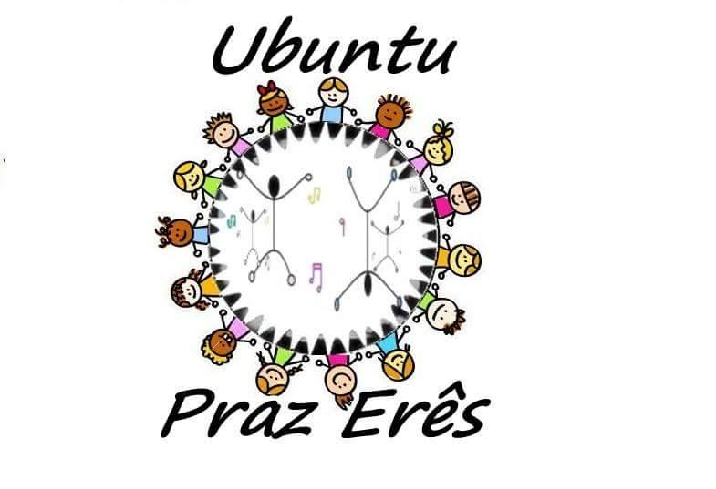

Ubuntu Pras Erês atua através da Cultura africana e afro Brasileira trabalhando na preparação corporal.
Objetivo é a iportância da Cultura Negra, promovendo Jovens a conhecerem suas origens.
Se protegendo de seus aspectos de direitos.Tornando-se Vúlneravel se preenchendo de cultura.
como:Dança Afro,Percussão,Leitura,Alongamento,Peças Teatras eparticipações de Filme brasileiro.
também temos Thetallealing.Pocesso de meditação que promove a cura física,psicologica e espiritualidade com oração focada.Também aprende ativação DNA.Escaneamento do corpo fisíco.